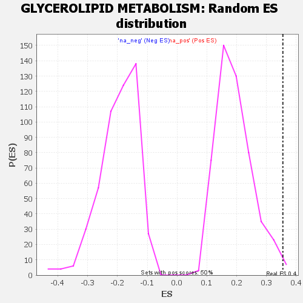

| | | Dataset | GSEA RNK clr Maaslin2 MucosalvsLuminal KO - Cecum.rnk |
| Phenotype | NoPhenotypeAvailable |
| Upregulated in class | na_pos |
| GeneSet | GLYCEROLIPID METABOLISM |
| Enrichment Score (ES) | 0.3549343 |
| Normalized Enrichment Score (NES) | 1.8398662 |
| Nominal p-value | 0.013916501 |
| FDR q-value | 0.041472957 |
| FWER p-Value | 0.476 |
Table: GSEA Results Summary
 Fig 1: Enrichment plot: GLYCEROLIPID METABOLISM
Fig 1: Enrichment plot: GLYCEROLIPID METABOLISM
Profile of the Running ES Score & Positions of GeneSet Members on the Rank Ordered List

Fig 2: GLYCEROLIPID METABOLISM: Random ES distribution
Gene set null distribution of ES for GLYCEROLIPID METABOLISM